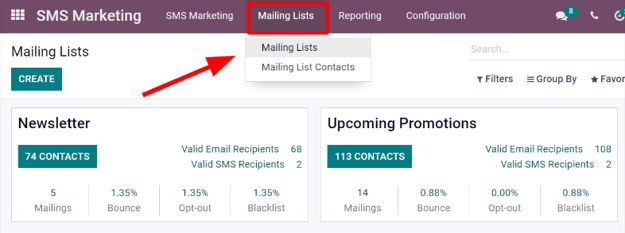
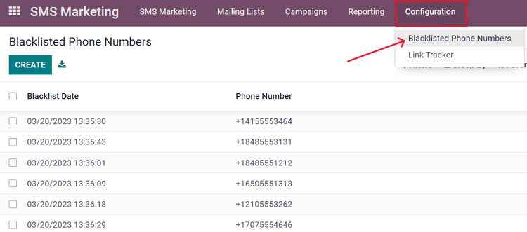

Listas de correo y listas de exclusión¶
Crear o importar listas de correo en Odoo es muy útil al seleccionar contenido para grupos específicos de personas que comparten características demográficas o intereses similares. Las listas de correo también son una excelente manera de iniciar si una empresa está migrando desde otro sistema y ya cuenta con un público establecido.
Además, proporcionarle a su público la opción de anular la suscripción a sus correos ayuda a que las empresas mantengan una buena relación con los clientes, pues les permite controlar lo que reciben.
Listas de correo¶
En la aplicación Marketing por SMS hay una opción en el menú de encabezado llamada Listas de correo. Al hacer clic en ella se abre un submenú con las opciones Listas de correo y Contactos de la lista de correo.
Haga clic en para obtener una vista general de todas las listas de correo en la base de datos.
Para editar una lista existente, selecciónela en la página de Listas de correo y modifíquela.
Haga clic en el botón Nuevo ubicado en la esquina superior izquierda de la página de Listas de correo para crear una nueva lista. Esta acción abrirá un formulario vacío de plantilla de lista de correo.

Primero, elija un nombre para la lista de correo y active la opción Es público para que los destinatarios puedan acceder a la lista en la página de gestión de suscripción y puedan actualizar sus preferencias de suscripción en cualquier momento.
Nota
No es necesario seleccionar la casilla Es público, pero es recomendable para que mantenga una buena relación con sus clientes.
Cuando complete esos campos, haga clic en crear para finalizar el formulario. Después, podrá acceder a la nueva lista de correo que acaba de crear en el tablero principal de listas de correo.
Para editar o personalizar aún más la lista de correo, selecciónela de la página principal de listas de correo para abrir el formulario de detalles.
En la parte superior del formulario de la lista de correo hay varios botones inteligentes de estadísticas analíticas para distintas métricas relacionadas con la lista de correo (por ejemplo, destinatarios, correos, etc.).
Para revisar o editar cualquiera de esos elementos, haga clic en el botón inteligente que desee para abrir una página separada con datos detallados de la lista de correo.
Para hacer cambios a la lista de correo, haga clic en el botón editar en la esquina superior izquierda del formulario de la lista de correo.

Nota
No olvide hacer clic en el botón guardar una vez que haya hecho los cambios.
Contactos de las listas de correo¶
Para acceder a la información de los contactos de una o más listas de correo, vaya a para abrir un tablero con todos los contactos vinculados con una o más de las listas de correo configuradas en la base de datos.

Nota
De forma predeterminada, Odoo abre la página de contactos de las listas de correo con el filtro No incluir el teléfono en la lista de exclusión en la barra de búsqueda. Por lo tanto, solo aparece la información de contacto de los destinatarios que aún desean recibir mensajes y correos.
Historial de comunicación en el chatter¶
En la sección chatter de cada destinatario se lleva el registro de todos los correos que se le enviaron. Esta se ubica debajo del formulario de contacto del destinatario (en la aplicación Contactos).
Los usuarios de la base de datos pueden consultar el chatter para llevar un mejor seguimiento de la comunicación y ver el historial de interacciones con contactos y clientes potenciales.
Por ejemplo, un representante de ventas puede usar el chatter para encontrar con rapidez las promociones de SMS que ha recibido o no un cliente específico.

Lista de exclusión¶
La aplicación Marketing por SMS de Odoo cuenta con la función lista de exclusión. Esta permite que los destinatarios agreguen su número de teléfono a una lista de personas que ya no desean recibir mensajes o correos.
También se conoce como el proceso de anular suscripción: se agregará a los clientes a una lista de exclusión de forma automática si hacen clic en anular suscripción en su página de gestión de suscripción. Si es necesario, también puede agregar clientes a esta lista de forma manual.
Para ver una lista completa de los números en la lista de exclusión vaya a para abrir el tablero que incluye todos los números en la lista de exclusión de la base de datos.
Para agregar un número a una lista de exclusión de forma manual, haga clic en el botón Nuevo ubicado en la esquina superior izquierda del tablero y escriba el número telefónico en el formulario de la siguiente página. También hay una casilla para indicar si ese número de teléfono en particular está activo o no.
Una vez que complete el formulario, haga clic en Guardar para agregarlo a los números de teléfono en la lista de exclusión. Para eliminar cualquier número de la lista, selecciónelo en el tablero y haga clic en Eliminar de la lista de exclusión en el formulario del número correspondiente.
Importar listas de exclusión¶
Durante una migración de software o plataforma puede importar una lista de exclusión de contactos existente. Esto incluye a los clientes que ya solicitaron que les agregara a la lista de exclusión de SMS.
Vaya a , seleccione el menú desplegable Favoritos (debajo de la barra de búsqueda) y haga clic en Importar registros.